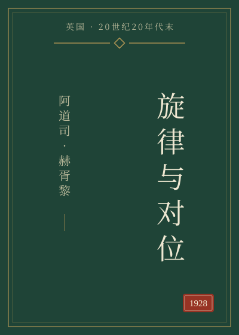
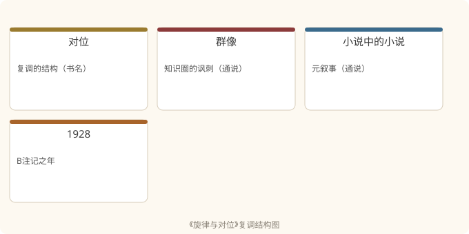

旋律与对位
一、基本信息
| 作者 | 赫胥黎 |
|---|---|
| 成书/出版 | 1928年（作者页注记：Britannica 列举——旋律与对位 (1928)） Aldous Huxley — Encyclopaedia Britannica（百科全书） |
| 国别/地区 | 英国 |
| 时代 | 近代 · 20世纪20年代末 |
| 体裁 | 长篇小说 |
| 语言 | 英语 |

《旋律与对位》复调结构图（主题·结构图）
二、创作背景
作者页注记：旋律与对位 (1928)、加数加 (1936)——'小说（Britannica 列举）'。
Britannica：赫胥黎——《美丽新世界》作者（作者页交叉）。
题材（通说待核）：多线人物的'对位'——音乐化的小说结构。
三、内容脉络
（通说待核）伦敦知识圈的群像：菲利普·夸尔斯的'音乐化'小说理论。
（通说待核）'对位'：情节的复调。
四、主要人物表
| 人物 | 身份 | 说明 |
|---|---|---|
| 菲利普·夸尔斯 | 小说家 | （通说待核） |
| 莫兰德 | 漫画家 | （通说待核） |
五、主题与艺术特点
- '对位法'的小说结构（书名语境——通说待核）。
- 知识圈的讽刺（通说待核）。
- '小说中的小说'（通说待核）。
六、影响与评论
- Britannica：Point Counter Point (1928)（作者页注记）。
Aldous Huxley — Encyclopaedia Britannica（百科全书） - Britannica：《美丽新世界》为代表作（作者页交叉）。
Aldous Huxley — Encyclopaedia Britannica（百科全书）
七、阅读建议
难点
- 多线复调。
- 1920年代英国知识圈。
- 《旋律与对位》中译本（上海译文等——通说待核）。
- 英文原版。
赫胥黎现实主义篇；与《美丽新世界》对读。
八、待核实
- 夸尔斯/莫兰德人名核对（通说）。
- 1928年出版细节待核。
- '音乐化'结构说法待核。